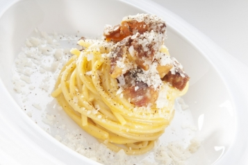

Spaghetti alla Carbonara

Description
This Carbonara recipe is presented by Luciano Monosilio (Youtube). It features a classic combination of Pecorino cheese, Parmesan cheese,
black pepper, eggs, guanciale from Amatrice, and Spaghettoni Monograno
Felicetti. The dish is creamy and rich, showcasing the authentic flavors of
Italian cuisine.
Ingredients
- 100g Pecorino cheese, grated
- 100g Parmesan cheese, grated
- Black pepper in grains, freshly ground
- 4 eggs (yolks only)
- 150g guanciale, diced
- 320g Spaghettoni Monograno Felicetti
- Salt, to taste
Instructions
- Separate the egg yolks from the egg whites.
-
In a bowl, combine the egg yolks, Pecorino cheese, Parmesan cheese, and a
generous amount of freshly ground black pepper. Whisk vigorously until
well combined.
-
In a nonstick skillet, brown the diced guanciale over medium heat until
the fat is rendered and the guanciale is crisp on the outside but still
creamy inside. Strain and reserve the fat.
-
Bring a pot of salted water to a boil and cook the Spaghettoni for 13
minutes or until al dente. Drain the pasta, reserving some of the cooking
water.
-
Return the pasta to the pot over low heat. Add the egg and cheese mixture,
stirring quickly to create a creamy sauce without scrambling the eggs. Add
a little reserved pasta water if needed to achieve the desired
consistency.
-
Stir in the cooked guanciale and some of the reserved guanciale fat. Mix
well to combine.
-
Serve the Carbonara immediately, topped with additional cheese and freshly
ground black pepper.
Preparation time: 20 minutes
Cooking time: 20 minutes
Number of guests: 4